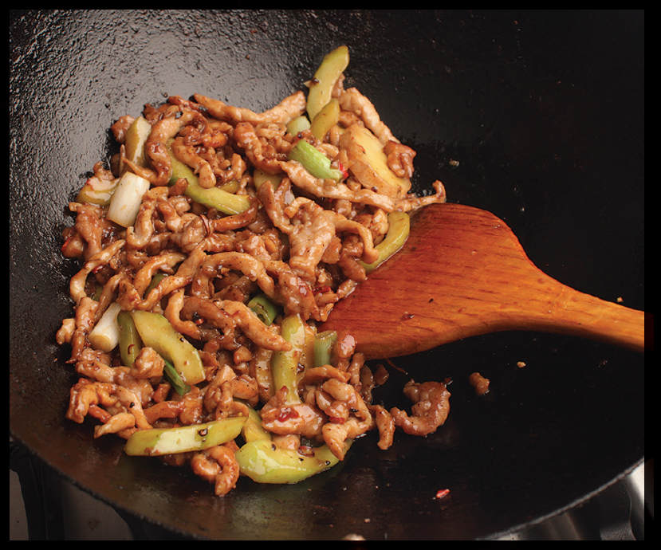

SLICED PORK AND CUCUMBER
|
Yield Serves 4 |
Active Time 15 minutes Total Time 30 minutes |
INGREDIENTS
For the Pork:
1 pound boneless pork loin, cut into 2-inch matchsticks
¼ teaspoon (2 g) sugar
¼ teaspoon (1 g) freshly ground white pepper
1 teaspoon (5 ml) Shaoxing wine or dry sherry
1 teaspoon (5 ml) light soy sauce or shoyu
1 teaspoon (5 ml) roasted sesame oil
½ teaspoon (2 g) baking soda
1 teaspoon (3 g) cornstarch
For the Sauce:
½ teaspoon (2 g) freshly ground white pepper
1½ tablespoons (about 25 ml) water
1½ tablespoons (about 25 ml) light soy sauce or shoyu
For the Cornstarch Slurry:
1 teaspoon (3 g) cornstarch
1 tablespoon (15 ml) water
For the Stir-Fry
3 tablespoons (45 ml) peanut, rice bran, or other neutral oil
2 medium garlic cloves (5 g), smashed
2 slices (10 g) fresh ginger
1 teaspoon chopped homemade (see here) or store-bought pickled chiles (optional)
2 scallions, white and pale green parts only, cut into 1-inch segments
One 8-ounce American or English cucumber, peeled, halved lengthwise, seeds removed, and cut on a bias into ¼-inch-thick half-moons
Cucumbers are an oft-forgotten vegetable when it comes to stir-fries. We tend to think of them as vegetables to be eaten raw or marinated in salads, but with a brief stir-fry they retain their bright crunch while picking up flavor from the wok. Paired with pork and pickled chiles, they make for a great stir-fry that tastes light and refreshing.
DIRECTIONS
1For the Pork: Place the pork in a medium bowl, cover with cold water, and vigorously agitate it. Drain through a fine-mesh strainer set in the sink and press on the pork with your hands to remove excess water. Return the pork to the bowl and add the sugar, white pepper, wine, soy sauce, sesame oil, baking soda, and cornstarch. Stir vigorously with your fingertips or chopsticks for 30 seconds. Set aside for 15 minutes at room temperature or refrigerate for up to 8 hours.
2Meanwhile, Make the Sauce: Combine the white pepper, water, and soy sauce in a small bowl and stir together until homogenous. Set aside. Combine the cornstarch and water in a separate small bowl and stir with a fork until the cornstarch is dissolved.
3BEFORE YOU STIR-FRY, GET YOUR BOWLS READY:
4For the Stir-Fry: Heat a wok over high heat until lightly smoking. Add 1 tablespoon (15 ml) of the oil and swirl to coat. Add half of the pork, spread into a single layer, and cook without moving until lightly browned, about 45 seconds. Cook, tossing and stirring frequently until barely cooked through, about 30 seconds longer. Transfer to a clean bowl and set aside.
5Wipe out the wok and return it to high heat until lightly smoking. Add 1 tablespoon (15 ml) of the remaining oil and swirl to coat. Stir-fry the remaining pork in the same manner and add it to the same bowl.

6Wipe out the wok and return it to high heat until lightly smoking. Add the remaining tablespoon (15 ml) oil and swirl to coat. Add the garlic, ginger, pickled chiles (if using), and scallions and cook, tossing and stirring constantly, until fragrant, about 30 seconds. Add the cucumber and scallions and stir-fry until just heated through, about 1 minute. Return the pork to the wok. Stir the sauce and add to the wok by pouring it around the edges. Stir the cornstarch slurry and add a splash. Cook, tossing, until the sauce thickens and the pork is cooked through, about 30 seconds longer. Adjust the sauce consistency with more cornstarch slurry if it is too thin or a splash of water if it is too thick. Transfer to a serving platter and serve immediately with steamed white rice.